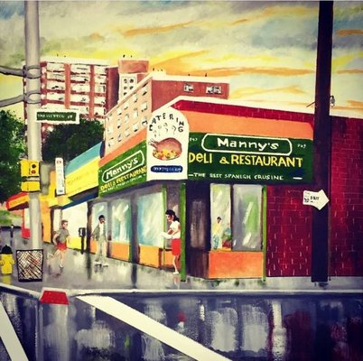

The Story

In 1994, Manny established Manny's Deli & Restaurant. Throughout the years, his establishment has served tens of thousands of people from all over the world. As such, Manny's Deli & Restaurant has been among the premiere locations for authentic Spanish cuisine in Newark, New Jersey and the United States.